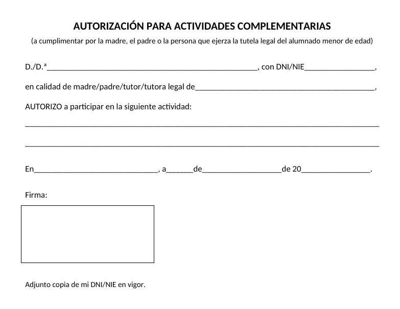
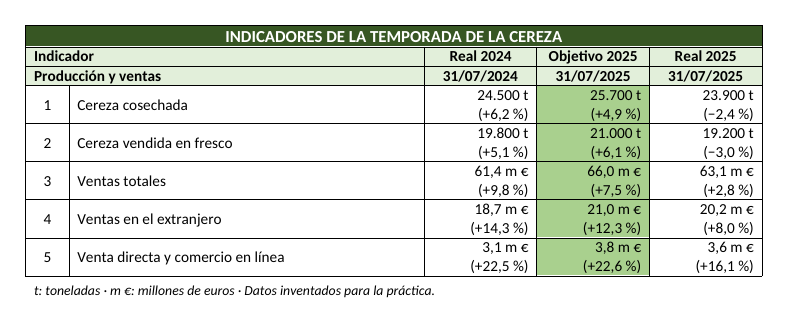
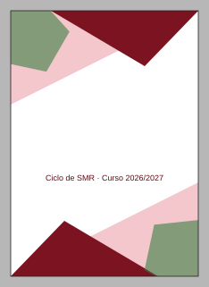
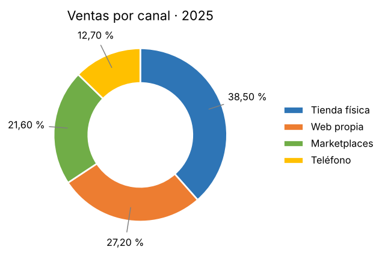

0223 · Aplicaciones ofimáticas · Tema 2
Taller de maquetación — Cinco prácticas cortas
Qué se evalúa · RA y criterios
Qué se evalúa
RA2. Elabora documentos y plantillas, describiendo y aplicando las opciones avanzadas de procesadores de textos.
- b) Se han diseñado plantillas. (T1)
- c) Se han utilizado aplicaciones y periféricos para introducir textos e imágenes. (T2, T3 y T4)
- d) Se han importado y exportado documentos creados con otras aplicaciones y en otros formatos. (T5)
Cuentan como trabajo diario de cada criterio. Son obligatorias: una práctica sin entregar cuenta como no hecha.
Cómo se entrega
- Cada práctica tiene su propia tarea en el curso de Moodle del módulo, con su fecha límite.
- Se entrega el archivo editable (
.docxo.dotx), nunca un PDF ni una captura: hay que poder comprobar cómo está hecho, no solo cómo se ve. - Nombre del archivo:
T1_Apellido_Nombre.docx, con tu primer apellido y tu nombre, sin tildes, sin eñes y sin espacios. Por ejemplo:T2_Nunez_Maria.docx. - Antes de subirla, repasa la lista de comprobación de cada práctica. Si todo está marcado, está completa.
| Práctica | Se apoya en | Criterio | Se entrega |
|---|---|---|---|
| T1 · Tabulaciones | Subtemas 2.2 y 2.4 | b | .docx + .dotx |
| T2 · Tabla con celdas combinadas | Subtema 2.3 | c | .docx |
| T3 · Portada con formas y WordArt | Subtema 2.3 | c | .docx |
| T4 · Gráfico de anillo | Subtema 2.3 | c | .docx |
| T5 · Combinar con reglas | Subtema 2.5 | d | 2 × .docx |
T1 · Tabulaciones: pedidos y autorización
Duración: 1 sesiónSe apoya en: 2.2 y 2.4Criterio: b
Las tabulaciones sirven para alinear texto en columnas sin usar una tabla. La regla de oro: nunca alinees con espacios, porque en cuanto cambia la fuente o el tamaño, todo se descoloca.
Parte A · La lista de pedidos
⬇ Descargar t1-pedidos.docx.
Las columnas ya están separadas con una tabulación cada una, pero no hay ninguna
tabulación fijada, así que no se alinean.
- Selecciona todas las líneas de la lista, desde «Cód. producto» hasta la última fila. El título no.
- Abre
Inicio > Párrafo(el iniciador del grupo, la flechita de la esquina) y pulsa Tabulaciones… abajo a la izquierda. - Fija estas cuatro tabulaciones. Para cada una: escribe la posición, elige alineación y relleno y pulsa Fijar. Al terminar las cuatro, Aceptar.
| Columna | Posición | Alineación | Relleno |
|---|---|---|---|
| Cód. producto | 1 cm | Izquierda | Ninguno |
| Fecha de pedido | 10 cm | Derecha | Puntos (2 ……) |
| Precio | 12,5 cm | Decimal | Ninguno |
| Unidades | 14,5 cm | Centrada | Ninguno |
Fíjate en lo que hace cada tipo: la decimal alinea los precios por la coma, aunque unos tengan más cifras que otros; la centrada coloca las unidades en el centro de la columna; la derecha con puntos une el código con la fecha, como en un índice.
Parte B · Un modelo de autorización como plantilla
Desde un documento en blanco, reproduce este modelo. Todas las líneas para
rellenar a mano se hacen con tabulaciones con relleno de línea
(el relleno 4, ____), no escribiendo guiones bajos.

- Para que una línea llegue hasta el final, fija una tabulación izquierda con relleno de línea en el margen derecho (unos 16 cm) y pulsa Tab.
- En «En ____, a ___ de _____ de 20___» hay cuatro tabulaciones en el mismo párrafo.
- El recuadro de la firma es una forma Rectángulo sin relleno, o una tabla de una sola celda de 6 cm de ancho.
- Guárdalo como plantilla:
Archivo > Guardar comoy en Tipo elige Plantilla de Word (*.dotx).
Entrega en Moodle (tarea T1): T1_Apellido_Nombre.docx
(pedidos) y T1_Apellido_Nombre.dotx (autorización).
T2 · Una tabla con celdas combinadas
Duración: 1 sesiónSe apoya en: 2.3Criterio: c
Reproduce en Word esta tabla de indicadores. No es una tabla de las que salen con un clic: tiene filas combinadas, columnas de anchos distintos, celdas con dos líneas y una columna destacada.

Especificaciones
- Cinco columnas con estos anchos exactos (
Propiedades de tabla > Columna > Ancho preferido): 1 cm · 8,2 cm · 2,6 cm · 2,6 cm · 2,6 cm. - Fila de título: las cinco celdas combinadas
(
Disposición > Combinar celdas), texto blanco en negrita centrado, sombreado verde oscuroRGB(55, 86, 35). - Filas 2 y 3: las dos primeras celdas combinadas en cada una,
texto en negrita y sombreado verde claro
RGB(226, 239, 218). - Datos: el número de fila centrado; los valores alineados a la derecha, con la cifra y la variación en dos líneas dentro de la misma celda (Intro dentro de la celda, no dos filas).
- Columna Objetivo 2025 sombreada en verde
RGB(169, 208, 142). - Todo el texto centrado en vertical en su celda
(
Disposición > Alineación). - Debajo, la nota «t: toneladas · m €: millones de euros…» en cursiva, 9 pt.
Entrega en Moodle (tarea T2): T2_Apellido_Nombre.docx.
T3 · Portada con formas y WordArt
Duración: 1 sesiónSe apoya en: 2.3Criterio: c
Diseña esta portada con cuatro triángulos, dos pentágonos y un WordArt. Es la práctica de colocar objetos: superponerlos, ordenarlos y sacarlos por los bordes de la página.

Especificaciones
- Triángulos (
Insertar > Formas > Triángulo rectángulo): dos granatesRGB(123, 20, 32)y dos rosadosRGB(244, 199, 204), sin contorno. Para orientarlos usaFormato de forma > Girar > Voltear horizontalmenteo verticalmente. - Pentágonos: verdes
RGB(58, 125, 68), sin contorno y con transparencia del 40 % (Formato de forma > Relleno > Transparencia). - Orden de las capas: los rosados al fondo, los granates encima
y los pentágonos por delante de todo (
Traer adelante/Enviar atrás). - WordArt «PROYECTO» con efecto
Formato de forma > Efectos de texto > Transformar > Arcoy relleno degradado del rojo al granate. - Subtítulo en un cuadro de texto sin borde ni relleno.
Para sacar una forma por el borde de la página ponle el ajuste Delante del texto, llévala hasta el borde con el ratón y termina de moverla con las flechas del teclado; con Ctrl+flecha se mueve en pasos muy pequeños. Lo que quede fuera de la hoja no se imprime: es lo que da el efecto de «sangrado».
Entrega en Moodle (tarea T3): T3_Apellido_Nombre.docx.
T4 · Gráfico de anillo
Duración: media sesiónSe apoya en: 2.3Criterio: c
La tienda Jerte Digital (inventada) quiere ver de un vistazo por dónde vende. Con estos datos, haz una tabla y debajo un gráfico de anillo como el de la imagen.
| Canal de venta | Ventas 2025 |
|---|---|
| Tienda física | 38,50 % |
| Web propia | 27,20 % |
| Marketplaces | 21,60 % |
| Teléfono | 12,70 % |

- Haz la tabla de datos en Word, con bordes y los porcentajes alineados a la derecha.
Insertar > Gráfico > Circular > Anillo. Se abre una pequeña hoja de Excel: escribe ahí las cuatro filas (los valores, sin el símbolo %) y ajusta el rango arrastrando la esquina azul. Cierra la hoja.- Título del gráfico: Ventas por canal · 2025.
- Cambia los colores con
Diseño de gráfico > Cambiar colores: cualquier paleta distinta de la que sale por defecto. - Haz clic derecho sobre el anillo (no sobre el gráfico
entero) >
Dar formato a serie de datos > Opciones de seriey pon el tamaño del agujero del anillo al 60 %. - Leyenda a la derecha:
Agregar elemento de gráfico > Leyenda > Derecha. - Etiquetas:
Agregar elemento de gráfico > Etiquetas de datos. En Más opciones deja solo Valor y, en Número, dos decimales y el símbolo % (código de formato0,00" %"). - El gráfico de anillo no permite colocar las etiquetas fuera con una opción: arrástralas una a una fuera del anillo. Con Mostrar líneas guía marcado, Word dibuja la línea que las une a su sector.
Entrega en Moodle (tarea T4): T4_Apellido_Nombre.docx.
T5 · Cartas que cambian según el destinatario
Duración: 1 sesiónSe apoya en: 2.5Criterio: d
Marta organiza la fiesta sorpresa de cumpleaños de Lola y tiene la lista de invitados en Excel. Quiere mandar un recordatorio solo a quien ha confirmado y, además, decirles el importe del regalo común solo a quienes se apuntaron. Una sola carta, dos versiones.
⬇ Descargar t5-invitados.xlsx
— doce invitados con las columnas Nombre, Apellidos,
Correo, Asiste (Sí, No o Pendiente) y Regalo (Sí o No).
Las dos versiones de la carta
Hola, Bruno:
Recuerda que la fiesta sorpresa de cumpleaños de Lola es el sábado 12 de diciembre a las 21:00. Será en el local de la peña, en la C/ Real, 14.
¡Nos vemos allí!
Marta
Hola, Ana:
Recuerda que la fiesta sorpresa de cumpleaños de Lola es el sábado 12 de diciembre a las 21:00. Será en el local de la peña, en la C/ Real, 14. Como te apuntaste al regalo común, te tocan 7 €: puedes traérmelos el viernes 11 a las 17:00 a mi casa o dármelos en la fiesta.
¡Nos vemos allí!
Marta
Pasos
- Documento nuevo.
Correspondencia > Iniciar combinación de correspondencia > Cartas. Seleccionar destinatarios > Usar una lista existentey eliget5-invitados.xlsx, hoja Invitados.Editar lista de destinatarios > Filtrar: Asiste Igual aSí.- Escribe la carta común e inserta el campo Nombre en el saludo con
Insertar campo combinado. - Coloca el cursor al final del párrafo de la fecha y el lugar y usa
Reglas > Si… Entonces… Sino…: Nombre del campo Regalo, Comparación Igual a, Comparar conSí. En Insertar este texto escribe el texto del regalo y deja vacío De lo contrario, insertar este texto. - Revisa con
Vista previa de resultadosvarios destinatarios: unos deben tener el párrafo y otros no. Finalizar y combinar > Editar documentos individuales > Todosy guarda el resultado.
Sí con tilde y
Si sin tilde son textos distintos para Word. Escribe en la regla
exactamente lo que pone en el Excel.
Por qué el texto del regalo va en el mismo párrafo. Si pones la regla sola en una línea, en las cartas sin regalo ese párrafo queda vacío y aparece una línea en blanco de más. Colócala al final del párrafo de la fecha, justo después del punto, y empieza el texto de la regla con un espacio.
Al final del documento principal, debajo de la carta y separado por un salto de página, responde en dos o tres líneas: ¿cuántas cartas salen, cuántas llevan el párrafo del regalo y por qué Carmen, que se apuntó al regalo, no recibe ninguna?
Entrega en Moodle (tarea T5): T5_Apellido_Nombre.docx
(el documento principal, con la regla y tu respuesta) y
T5_Apellido_Nombre_cartas.docx (las cartas combinadas).